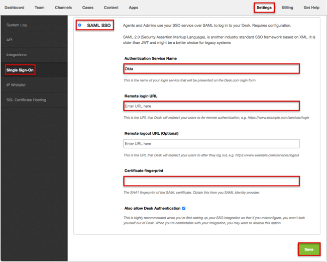
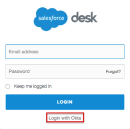

Log into Desk.com as an Administrator.
Navigate to Admin > Settings > Single Sign-On and then, select SAML SSO, as shown below.

Enter the following Remote login URL, as shown above.
Sign in to the Okta Admin app to generate this value.Enter the following Certificate fingerprint, as shown above.
Sign in to the Okta Admin app to generate this value.Done!
Notes:
IdP-initiated flows and SP-initiated flows are supported.
Just In Time (JIT) provisioning is not supported.
For SP-initiated flows:
Go to your login page.
Click the Log in with Okta link, as shown below.
